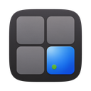

Save a website as a tool shortcut. It shows up as a box on your board and opens in its own window.
Enter a full URL with the protocol (http:// or https://), or just the address and https:// will be used by default.
Adjust how ToolCuts behaves. Changes apply when you save.
↑ ↓ to choose, Enter to open, Esc to close